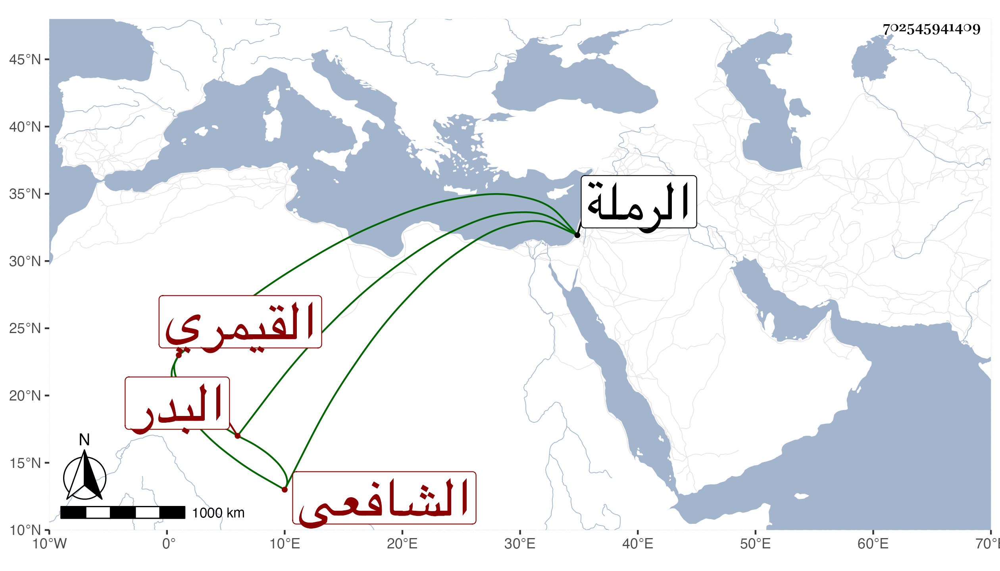

0902Sakhawi.DawLamic.ITO20230111-ara1.EIS1600.702545941409
Biography ID: 702545941409
457
حسن بن علي البدر القيمري الشافعي الريس بجامع قانم بالكبش وبجامع القلعة وأحد مؤذني الحسنية . كان بارعا في الحساب والفرائض والجبريات والعروض والميقات مع مشاركة في الفقه والنحو ومن شيوخه ابن المجدي وأبو الجود واستقر في تدريس الفرائض بمدرسة جوهر الصفوي من الرملة بعد شيخه أبي الجود المتلقي لها عن الواقف . مات في أثناء المحرم سنة خمس وثمانين وقد زاد على السبعين ، وكان حسن السيرة انتفع به جماعة ، وممن أخذ عنه الزين زكريا إمام الحسنية والبرهان الكركي رحمه الله .
